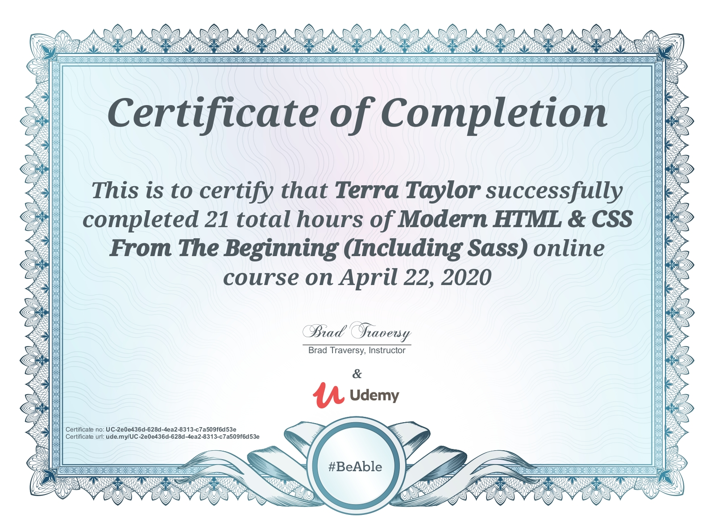

About Me
Let me tell you a little about myself and what I do...
Your project is in safe hands
I have been passionate about web development and software engineering for most of my life. I started learning about HTML when I was 12 years old at a computer science summer camp that I was fortunate enough for my parents to send me too. 22 years later I have acquired a Bachelors Degree in Computer Science, a Masters Degree in Information Technology and 12 years of professional and personal experience.
Most of my experience has been in working with front end technologies such as HTML, CSS, JavaScript, JQuery, AngularJS and ReactJS. I have also done full stack development with Java, NodeJS, .NET and MySQL building SOAP and RESTful web services, mostly. As technology changes, I like to keep my skills up to date by taking online courses on Youtube and Udemy. You can see some of my recent courses below.
In my free time I enjoy playing video games, spending time with my husband and daughter, traveling, cooking and dog training.
Staying updated with HTML and CSS

Analyzing recent frameworks
React, Redux and Firebase